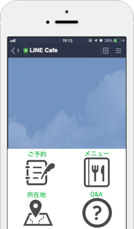
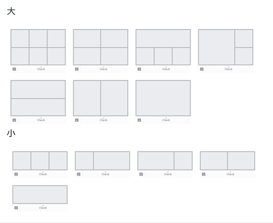
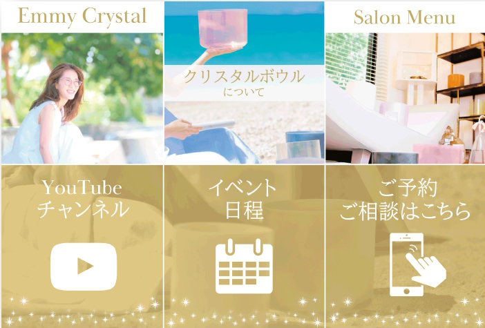

#002 リッチメニューは必須！

みなさん、LINE公式アカウントはもう開設できましたか？（開設方法はこちら）

次のステップとして、ご自分の公式アカウントのリッチメニューを作成しましょう。こちらはスマホアプリでは出来ないので、PCブラウザ版の「LINE Official Account Manager」から設定します。
リッチメニューは絶対に作るべき！
結論から先に言うと、リッチメニューは絶対に作っておくべきです！トーク画面にどーん！とボタンが表示されるので、友だちを自分の商品やサービスに直感的に誘導しやすいのです。
LINE公式アカウントは小さなホームページです！友だちに「これを知ってほしい」・「これを買ってほしい」は当然大切ですが、「どれだけ興味を持ってもらうか」・「どうやって集客につなげるか」まで考慮して項目・配置を決める必要があります。
まずは項目を決めるところからスタートしましょう。項目は決まったけど、画像やイラストが ご自分で制作できない場合は、Lancersやクラウドワークスなどでデザイナーに依頼して作ってもらうのも良いです。
メニューの内容
メニューは最小１〜6個まで設定できます（５はできません）。

ご自分のビジネスやサービスをしっかり打ち出せるメニューを設定しましょう。たとえば、「期間限定クーポン・ショップカードへの誘導」や「サロンのスタッフ紹介」、「予約・無料相談」など、可能性は無限大！すでに数多くの大企業も導入しているので、参考にするのもいいですね。（SONY、JINS、ドモホルンリンクルなど）


友だちは、時間がたつと離れていく
せっかく友だち登録してもらっても、いざ配信を始めるとブロックされてしまうことも珍しくありません。残念だけど、それが現実。
なので、最初の配信から大体３回目くらいの配信までに友だちを確実にご自分の商品やサービスに誘導する必要があります。「この人の友だちになってよかった！」と思ってもらえるようなメリットを提供しましょう！
もちろん、matsumotoもリッチメニュー作成のサポートをしております。是非LINEに友だち追加していただいて【初回60分無料相談クーポン】を有効利用してください。項目・配置の相談だけでも大丈夫です！
まずはLINE公式アカウントを開設しましょう！
●LINE公式アカウントの開設方法はこちら
●LINE公式アカウントをオススメする理由はこちら
●LINE公式アカウントでできることはこちら
●Lステップでできることはこちら